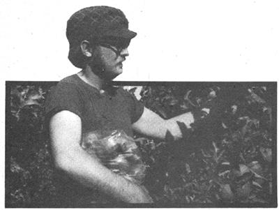
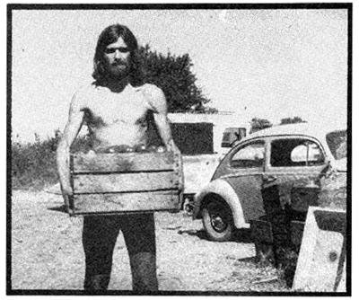
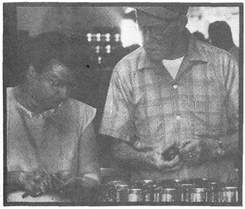
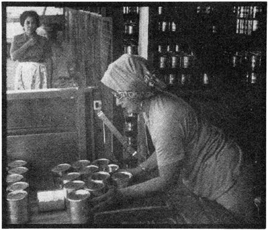

Do-it-yourself programs are more popular than ever now that inflation has carried the prices of many goods and services beyond our capacity to pay. Unfortunately, the costly items include many basic necessities especially food. The result is a proliferation of home vegetable gardens, as more and more of us enjoy the savings and satisfaction of growing our own.
Fine but what do you do if you have insufficient garden space, or worse stil none at all? That was our situation last year: gardenless and completely dependent on retail outlets. All too often, a bag full of groceries left us with an empty wallet until we learned how to trade extra inputs of time and energy for a substantial saving on foodstuffs.
The idea is that, instead of waiting for the food to get to you, you get out to where the food is: to an agricultural region during harvest season.
Please note that I'm not talking about roadside fruit and vegetable stands, where produce admittedly fresher than the supermarkets' is sold at chain store prices. No, what I'm referring to is something slightly less convenient but a lot more economical and it begins in the classified sections of local newspapers, under headings like "The Market Basket" or "Good Things to Eat". There you'll find the ads of the U-Pick growers, who sell their wares at rates considerably below those of your neighborhood grocery.
We picked our own produce in the Yakima Valley last fall and obtained a winter's supply of food for less than it would have cost us to grow it ourselves. To list just a few of the bargains, we found tomatoes for 8 cents a pound, potatoes for 54 a pound, and corn for a nickel an ear. Best of all were the apples we picked off the ground for nothing. "I'd rather give them away than have them rot there," the grower told us.
Picking your own food in harvest areas is more than just an economy it's a lot of fun and a great way to make new friends. We met several people in Yakima's campgrounds last September who were bent, as we were, on stocking up inexpensively. Some of the self-harvesters loaded their rigs to the ceiling with sacks of good produce and hauled it back to their homes in the city for freezing, canning, or drying. One young Seattle couple even went a step further and set up a canning operation centered around a Coleman stove at their campsite an ingenious process, we thought, but somewhat hazardous.
Even under less primitive conditions, as I'm sure you're aware, home canning leads to messy kitchens and the frustration of trying to find jars and lids. Such pieces of necessary hardware are becoming increasingly scarce and when you do find them, their cost cuts severely into the savings you manage by putting up your own food. We, and many others, elected to bypass the whole "canning on a Coleman" business and use the services of some custom operators who offered the efficiencies of a professional canning operation at a cost of 21 cents per large and 174 per small can.
Your first impression of a custom cannery is a shock to the senses an overwhelming pungency of fruits and vegetables mingled with an equally heady atmosphere of cheerful chaos. It's rare to come upon such a diverse group engaged in the same endeavor. A strange assortment by age, hair length, sex, and color-of people work side by side all busy peeling, slicing, and packing their winter's store of food. If there's a common denominator, it's the look of satisfaction radiating from most of the faces. Obviously, the process you're observing gratifies some basic urge.
You can be forgiven for feeling a little lost on your first visit but the bewilderment won't last long. The cannery workers are ready and willing to show you the ropes, and if you get hung up along the way you'll probably receive advice from the people at either elbow. (Incidentally, one advantage of using a custom cannery is that the staff can direct you to the best picking areas, organic growers, and packing houses which offer good quality culls.)
Once you've been checked in, your first step is to count out the cans you'll need from enormous sacks at one end of the building. Each, container is stamped with your customer number and a contents label.
You wash your produce at a sink in the center of the room, dip it into a steaming water bath, and dunk it in a tub of cold water. You then peel or slice the fruits and vegetables and fill the cans, ,topping them off with a little sugar, honey, or salt and the food is ready for processing.
Filled cans are placed on a conveyor belt which carries them through a huge steam table and spews them out the other end into a sealing machine. An attendant is stationed at that point to watch for trouble and to collect the. filled and sealed cans into tall metal baskets for cooking.
The filled baskets are lifted into the air by a pulley, tugged along an overhead track, and lowered gently into one of the huge cookers. Automatic timing devices and careful checking ensure that each batch of fruit, vegetables, or meat is correctly processed. The cans are then lifted once more, carried back along the track, and deposited in a vat of water where they cool.
Among the more interesting operations that can be observed in a custom cannery is the making of tomato juice. It's fun to watch as the fragrant mixture of tomatoes, onions, and green peppers is scooped up and poured into the top of a juice extractor. The fruit is transformed by the machine into a rich liquid which oozes through a mesh screen into a waiting pot, while discarded dry pulp splatters into a container below.
At Toppenish Custom Cannery (20 miles south of Yakima), we had an opportunity to talk to Kathy Alexander-manager of the operation-who told us that 1974 was shaping up as a record year for the cannery "definitely an attempt to combat high food prices," in her opinion. "This year, in addition to the usual local residents, we've had a surprising number of customers from as far away as the Puget Sound area. "These people spend their vacation camped in the valley, picking their own produce and bringing it here to can."
Other custom canneries are doing a brisk business these days along the seacoast. Their specialty, of course, is seafood and you needn't incur the complications and expense of sport fishing to "lay by" your supply. The secret? Concentrate on easily obtainable quarry such as oysters, clams, crabs, or bottom fish (none of which require a license, a boat, or other costly paraphernalia).
Oysters, for instance, can be taken with only a hammer or other simple tool that will knock them off the rocks to which they cling. To dig clams, you need nothing more than rubber boots and a shovel (and, of course, a low tide). Caution: Check locally before you collect shellfish. They can be toxic at certain times of the year.
Crabs can be trapped at any time with no equipment but a crab ring, which you can rent for a nominal fee ($1.50 to $2.00) at most bait and tackle shops on the west coast. We bought ours for $6.00 from a secondhand store in Newport, Oregon, and it's proven well worth the investment. Oh, yes you'll also need bait. Any, old fish carcass will do (the riper the better, since it's the crab's keen sense of smell that leads the creature to its food).
Both crabbing and bottom fishing can be successfully conducted from a pier or jetty, and we often combine the two operations. While our crab ring is enticing crawly critters on the ocean floor, we angle for cod, bass, flounder, perch, and whatever. Any really inedible catches-which aren't nearly as common as popular opinion holds-are used as bait for the crab trap.
The fact, though, is that very few species of fish can't be eaten. Many bottom fish are as pleasing to the palate, and every bit as nutritious, as the more prestigious salmon and tuna. While the majority of sportsmen pursue the more glamorous game fish-often at great expense and with little luck-increasing numbers of other anglers cut their food bills with "coarse" species which are more plentiful, much less discriminating, and much more easily caught with quite unsophisticated equipment.
Remember too that commercial fishermen often land bottom fish while pursuing other more prestigious species and many times shun the bother of marketing "trash" fish that bring only about 124 a pound. If you prowl the docks, as we do, you'll likely find someone who's eager to have you take an assortment of these bottom fish off his hands for little or nothing.
Fish, of course, are highly perishable and must be dealt with promptly. Many people we know take their catches home for canning or freezing but we're often on the road for long periods and prefer to make use once again of custom canneries in the areas where we collect our harvests.
You'd be surprised how little a winter's protein supply costs when you gather it by the methods` I've described. just one example: We recently purchased several large cod for 50 cents apiece from a commercial fisherman in Charleston, Oregon, and took them to a dockside cannery for processing. The result was 20 one-pound cans of delectable seafood for about 45 cents apiece. You can't do anywhere near that well at the grocery these davs!.
|
 |
 |
 |
|
 |
|
|